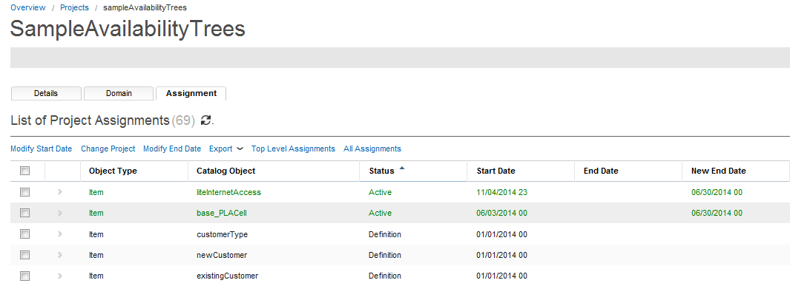
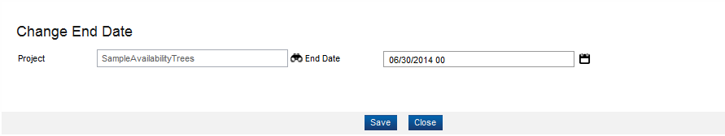

Item - Change End Date
The Catalog application provides an option to change the end date of item active Items. The following steps describe how to change the date:
- From the Overview page, click Commercial Modeling > Items in the Quick start section.
- The Item page appears; enter the search criteria.
- Click the Search button; the item results displays in the results area.
- Select an item from the list (for example, liteInternetAccess) and then click the Change End Date button.
- The Change End Date dialog appears; you can click the Search icon (
 ) to change the project.
) to change the project. - Click the Calendar icon and enter the new end date for the item.
- Click the Save button. A copy of the item, with new end date, is saved as an active item in the selected project's assignments.

